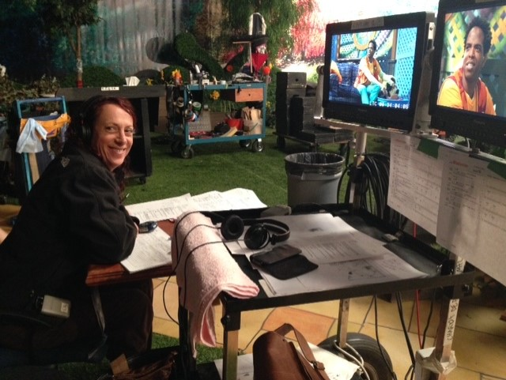
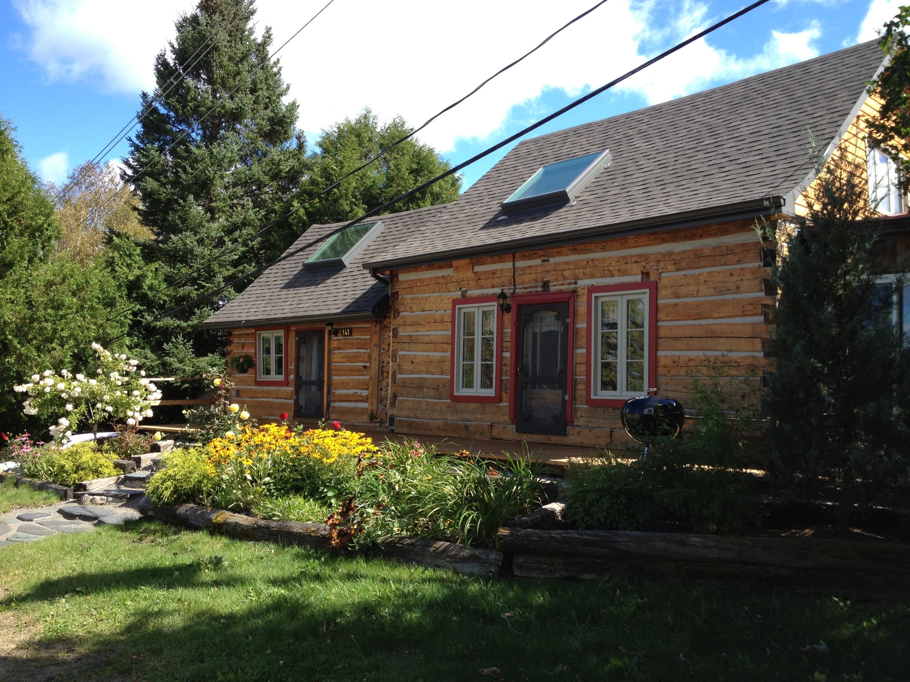

Élaine Roy
.jpg)
CONSEILLÈRE MUNICIPALE Siège no 2
Je me porte candidate pour un nouveau mandat afin de poursuivre la valorisation de la culture locale et la transmission de cet héritage
Je me porte candidate pour un nouveau mandat afin de poursuivre la valorisation de la culture locale et la transmission de cet héritage
J’ai siégé à la table du Conseil municipal de St-Côme de 2017 à 2021 aux dossiers Culture, Organisme, Signalétique et à la restructuration du site web
J'ai siégé au Conseil d’administration de la Chambre de commerce de St-Côme pendant 20 ans, de 1996 à 2017
Représentante au Conseil d’administration du Festival St-Côme en Glace de 2002 à 2005
Membre du Comité organisateur de la St-Jean-Baptiste de 1992 à 1995 et bénévole de 2016 à 2018
Bénévole à la bibliothèque de St-Côme depuis 2016
Je travaille comme assistante à la réalisation de séries jeunesse à la télévision depuis 1991: Bibi & ses Amis, Macaroni Tout Garni, Kaboum, Toc-toc-toc, Argonautes, Les Hipaloulas, Les Sapiens, Drazillion et l'Île de Kilucru.
Depuis plus de trois décennies, je veille sur l'une des demeures les plus anciennes de St-Côme, en tant que résidente et fière propriétaire. L'héritage de ce lieu résonne profondément en moi, et je m'efforce de le préserver avec coeur.
